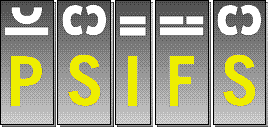

Version 1.10 (12-Jun-99)| PsiFS is a filing system that provides access via a serial link to the files stored on a SIBO (SIxteen-Bit Organizer) (a.k.a. EPOC16) or EPOC (a.k.a. EPOC32) computer. The standard Psion Link Protocol (PLP) is used; there is no extra software to install or run on the remote machine.
PsiFS is FreeWare; it may be freely used and copied. See the legal matters section of the documentation for more details. |
|
| Copyright © Alexander Thoukydides, 1998, 1999 |